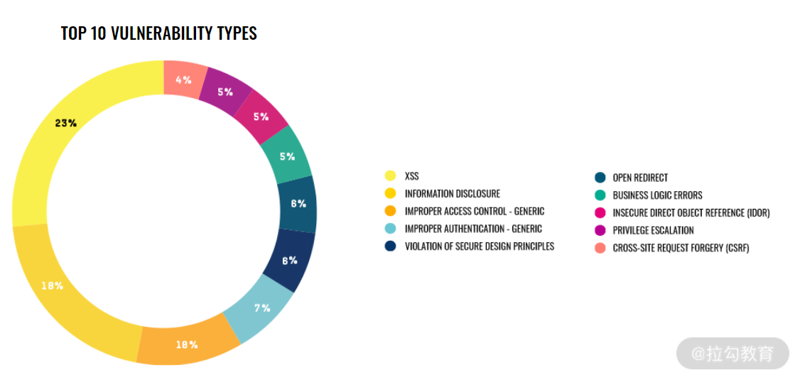

要点：XSS
在这些常见的Web 漏洞中，XSS（Cross-site Script，跨站脚本）漏洞无疑是最多见的。根据 HackerOne 漏洞奖励平台发布的 The 2020 Hacker Report，XSS 漏洞类型占所有报告漏洞中的 23％，排名第一。
起源
最早的 XSS 漏洞可追溯到 1999 年末，微软安全工程师发现一些网站遭到攻击，网站被插入了一些恶意脚本和图像标签。随后，微软对此类漏洞进行研究分析，并在 2000 年 1 月，正式使用“cross-site scripting”这个名称，然后逐渐被业界采用，留传至今。
跨站脚本（Cross-site Script），按理应该简称为 CSS，但为了与层叠样式表（CSS）区分开，特意改为 XSS。
XSS 漏洞，通常指的是网站对用户输入数据未做有效过滤，攻击者可以将恶意脚本注入网站页面中，达到执行恶意代码的目的。攻击者只需要诱使受害者打开特定的网址，就可以在受害者的浏览器中执行被注入的恶意代码，从而窃取用户身份，执行一些敏感操作，或是进行其他的危害行为。
危害：绝不仅仅只是弹框
一些听过 XSS的同学，可能仅停留在弹框的印象里；我曾在修复此类漏洞时，只是简单地针对alert 函数做了下过滤。这都是对 XSS 攻防原理理解不够造成的误解。其实，只要你想象力够丰富，它的危害是可以造成很大的。
比如 2005 年 10 月 4 日诞生的世界上第一个 XSS 蠕虫：Samy（作者的名字）。Samy 利用网络社交媒体 MySpace的XSS 漏洞传播，受害者会自动将 Samy 本人添加为关注者，并在受害者的用户页面显示一行字串“but most of all，samy is my hero”，并再次插入恶意代码，谁访问受害者的网页谁就会被感染。
Samy 感染的用户呈指数倍增长，最终，超过 100 万用户被感染，作者也因事态发展失控而入狱，并被禁止 3 年内接触计算机，外加 90 小时的社区服务。
图 3：受 Samy 蠕虫攻击后，作者粉丝暴涨
图 4：受 Samy 蠕虫攻击后，受害者的用户页面被篡改
Samy 蠕虫是现实世界中 XSS 攻击的经典案例，除了蠕虫攻击外还有很多其他危害：盗号、钓鱼欺诈、篡改页面、刷广告流量、内网扫描、网页挂马、挖矿、键盘监听、窃取用户隐私等等。
如果能充分利用好业务场景下的功能，再结合一定技术和想象力，XSS 所造成的危害绝不仅仅只是弹框。如果你是开发，在修复 XSS 漏洞过程中，也别单纯想着怎么防止弹框。更为全面的防御方案，我会在下一讲《05｜XSS：漏洞的检测与防御》中介绍。
XSS 漏洞的分类
通常 XSS 分为存储型和反射型，但还有一种比较特殊的 DOM 型 XSS，它本身属于反射型 XSS，不过介绍的时候需要单独来讲。因此，我就按 3 种类型划分：反射型、存储型、DOM 型。
反射型 XSS
我们首先来看反射型 XSS。反射型 XSS 又被称为非持久型跨站脚本，它是将攻击代码放在 URL 参数中，而不是存储到服务器，因此需要诱使用户点击才能触发攻击。
以 DVWA 中的反射型 XSS 题目为例，通过向 name 参数输入以下代码即可触发漏洞：
1 | <script>alert(1)</script> |
图5：利用 XSS 漏洞执行注入的JS代码
在 Chrome 浏览器中，用“检查”功能看下网页源码，可以发现我们输入的代码被解析并执行了：
图6：被解析执行的注入的代码
其漏洞代码也非常简单。从 GET 参数 name 获取用户输入后，未经过滤就直接调用 echo 函数输出到页面，最终导致 XSS 的产生。漏洞代码如下：
Hello ' . $_GET[ 'name' ] . ''; } ?>有人认为反射型 XSS 的危害不如存储型 XSS，但我认为没有什么区别。这里的挑战主要是URL是否包含攻击代码。
存储型 XSS
第二种 XSS 漏洞是存储型 XSS，它又被称为持久型跨站脚本。攻击者将恶意代码存储到服务器上，只要诱使受害者访问被插入恶意代码的页面即可触发。存储型 XSS 经常出现在一些可以发表评论的地方，如帖子、博客。
在 DVWA 靶场中就有一个存储型 XSS 案例，它是个留言本的功能，支持用户发表评论，然后将用户输入的数据直接存储到数据库，并输出到页面上。这个过程中因为未做任何的过滤，导致了 XSS 漏洞的产生。
图 7：DVWA 靶场中的存储型 XSS
存储型 XSS 的特点就是不需要在诱使用户访问的URL中包含攻击代码，因为它已经存储到了服务器中，只需要让用户访问包含输出攻击代码的页面即可，漏洞代码如下：
' . mysql_error() . '' ); //mysql_close(); } ?>从 POST 参数中获取 mtxMessage 和 txtName 参数后，虽然经过一定过滤才插入到数据库中，但是中括号不会被过滤，在其他地方将其输出到页面后就会被解析（如图 5）。我们在 Message 中输入“<script>alert(1)</script>”，点击“Sign Guestbook”提交，即可触发漏洞。
图 8：触发漏洞弹框
利用 Chrome 浏览器的“检查”功能查看网页源码，可以发现刚才输入消息中的<script>标签被解析了：
图 9：script 标签被解析
正是它导致弹框的出现。
DOM 型 XSS
最后是 DOM 型 XSS 漏洞，它是基于文档对象模型（Document Object Model，DOM，用于将 Web 页面与脚本语言链接起来的标准编程接口）的一种漏洞，它不经过服务端，而是通过 URL 传入参数去触发，因此也属于反射型 XSS。
过段时间更新
Tips: Please indicate the source and original author when reprinting or quoting this article.